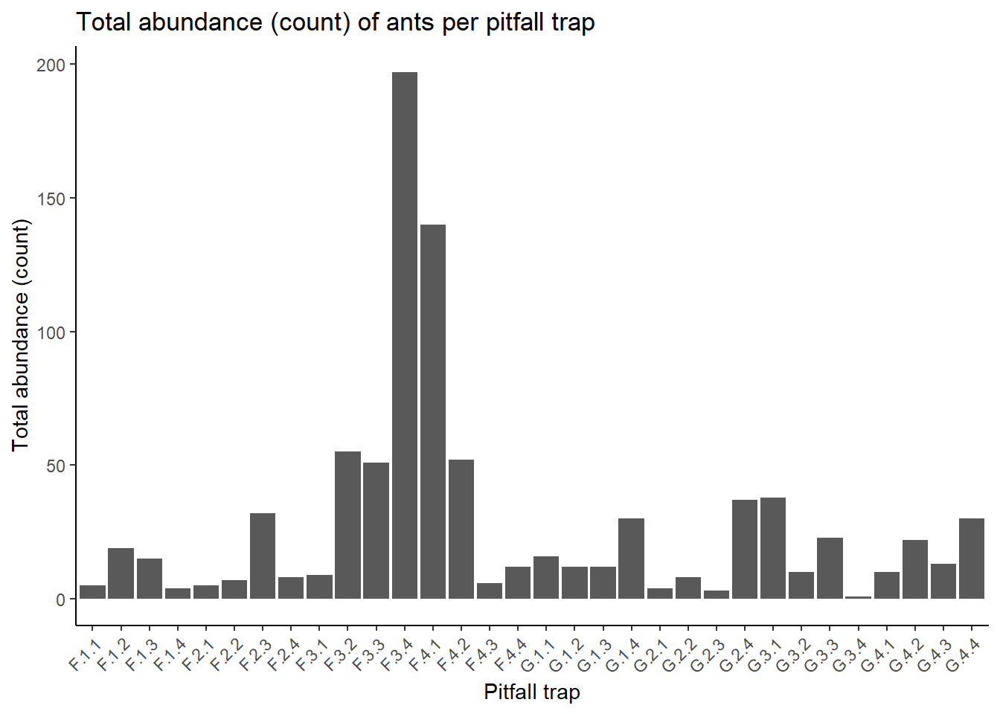

library(tidyverse)
library(readxl)Step By Step Analysis
Data Analysis - user friendly step-by-step version.
The data set we’re about to analyse includes information on species names and counts of ants from pitfall traps, collected from two vegetation types: Fynbos (F), and a stand of Eucalyptus/gum trees (G). The data set contains individual species counts, species names and quantitative soil surface data, collected using a quadrat placed over the sample site where each pitfall trap was placed. We aim to investigate the relationships between vegetation types, surface soil features and species richness and total abundances.
Pre-Analysis work
We will use the packages tidyverse and readxl to load and analyse our data in RStudio.
Data Wrangling, Cleaning and Checks
We have data on soil surface features (quadrat_data_clean), species counts and species names (pitfall_data_clean). We will read in each data sheet, clean it up a bit more and reorganize it for analysis.
quad.dat <- read.csv("quadrat_data_clean.csv")
view(quad.dat)
pitfall.dat <- read.csv("pitfall_data_clean.csv")
view(pitfall.dat)1) Checking variables: we want to confirm that variables are the correct format/type (i.e. chr for sites, and int for the counts).
str(quad.dat)'data.frame': 32 obs. of 5 variables:
$ site : chr "G.1.1" "G.1.2" "G.1.3" "G.1.4" ...
$ live.veg..perc.cover. : int 15 1 5 5 20 40 10 5 0 5 ...
$ litter..perc.cover. : int 70 69 45 93 65 60 60 75 80 94 ...
$ bare.ground..perc.cover. : int 10 10 30 0 10 0 20 15 5 0 ...
$ rocks.stones..perc.cover.: int 5 20 20 2 5 0 10 5 15 1 ...str(pitfall.dat)'data.frame': 32 obs. of 15 variables:
$ pitfall : chr "G.1.1" "G.1.2" "G.1.3" "G.1.4" ...
$ camponotus.sp : int 2 0 0 0 0 0 0 0 0 0 ...
$ ocymyrmex.sp : int 1 0 1 0 0 0 0 1 0 0 ...
$ technomyrmex.sp : int 1 0 0 0 0 0 0 0 0 0 ...
$ agraulomyrmex.sp: int 1 2 7 15 0 1 0 6 0 2 ...
$ monomorium.sp1 : int 1 1 2 0 0 0 0 2 2 0 ...
$ monomorium.sp2 : int 0 0 0 0 1 0 0 1 0 0 ...
$ pheidole.sp1 : int 3 0 0 6 0 0 0 1 14 0 ...
$ pheidole.sp2 : int 7 9 2 9 3 7 3 26 22 8 ...
$ pheidole.sp3 : int 0 0 0 0 0 0 0 0 0 0 ...
$ lepisiota.sp1 : int 0 0 0 0 0 0 0 0 0 0 ...
$ lepisiota.sp2 : int 0 0 0 0 0 0 0 0 0 0 ...
$ pachycondyla.sp : int 0 0 0 0 0 0 0 0 0 0 ...
$ pyramica.sp : int 0 0 0 0 0 0 0 0 0 0 ...
$ unknown.sp : int 0 0 0 0 0 0 0 0 0 0 ...That all looks good, except for one thing…
2) quad.dat column names - the column names for the quadrat data are confusing with all those full-stops. Let’s simplify the names, but keep the fact that these values are a percentage of total coverage explicit (using .pcover)
colnames(quad.dat) <- c("site", "live.veg.pcover", "leaf.litter.pcover", "bare.ground.pcover", "rocks.stones.pcover")Next we will confirm that there are no “empty” observations (i.e. missing values), and no duplicates.
## check for missing values ----
sum(is.na(quad.dat))[1] 0sum(is.na(pitfall.dat))[1] 0## check for duplicates ----
sum(duplicated(quad.dat))[1] 0sum(duplicated(pitfall.dat))[1] 0No missing values, and no duplicated values either! Yay! Now we can proceed with organizing and manipulating our data frames prior to visualization and analysis.
Organization:
We want to see what the relationship is between vegetation type (i.e. fynbos or eucalyptus gums), total abundance, and species richness. We will use the ggplot2 package to create bar plots and boxplots that show the total abundance and species richness of ants per pitfall/sample site, as well as between vegetation types. But before we do this, we need to generate the values for total abundance and species richness for each pitfall trap. We have the raw counts for each trap, but don’t have these two important values yet.
Total abundance per sample site/pitfall trap
We want to generate the total abundance of ants per pitfall trap; i.e. we need to sum the observed species counts in each row. We’ll do this by summing the counts of each species identified in each pitfall trap and adding a new column to the dataset that stores this information (total_abundance). To do this, we’ll use the mutate function from the dplyr package:
pitfall_total_abundance <- pitfall.dat %>%
group_by(pitfall) %>%
mutate(total_abundance = rowSums(across(everything())))Species richness per sample site/pitfall trap
Similarly, we want to generate the species richness per pitfall trap. For this we need R to count how many columns have a value greater than 0 (i.e. the species was detected), and have each occurrence of >0 logged as a count. Then we sum those counts for each row, to obtain the number of species found per pitfall. We’ll store this information in a new column, species_richness. Again, we’ll use the mutate function:
It’s a good idea to do a visual check of the data frame here, to make sure that the values of total abundance and species richness make sense for the information provided in the rows and columns. For example, something has clearly gone wrong if you can only count 3 species detected for a given pitfall trap, but the species_richness column says “7”. Fortunately for us, our visual check shows that the values in the new columns are all correct.
Now we want to combine both the species_richness and total_abundance columns onto the original data set of pitfall trap data. We will do this using the left_join function from tidyverse.
This has set us up with sensible variables to use for visualization and analysis. But what about comparing differences between the two vegetation types, eucalyptus and fynbos?
Grouping sites within the same vegetation types
If we want to detect any larger patterns by comparing all the pitfall traps from the eucalyptus stand with all the pitfalls from the Fynbos, we need to create a new column with a factor for vegetation type, and assign a level (G for eucalyptus/gums, F for Fynbos) to each pitfall trap/row. We will do this using the mutate and str_detect function to assign the appropriate factor level to each row, if the corresponding letter ‘G’ or ‘F’ are detected in the ‘pitfall’ variable column.
pitfall.dat <- pitfall.dat %>%
mutate(veg_type = case_when (
str_detect(pitfall, "G") ~ "G",
str_detect(pitfall, "F") ~ "F"
))Now let’s check that the new variable is a factor with two levels. If not, we’ll reassign the variable to be a factor, using the as.factor() function.
str(pitfall.dat) # veg_type comes up as a character variable. Let's change that.'data.frame': 32 obs. of 18 variables:
$ pitfall : chr "G.1.1" "G.1.2" "G.1.3" "G.1.4" ...
$ camponotus.sp : int 2 0 0 0 0 0 0 0 0 0 ...
$ ocymyrmex.sp : int 1 0 1 0 0 0 0 1 0 0 ...
$ technomyrmex.sp : int 1 0 0 0 0 0 0 0 0 0 ...
$ agraulomyrmex.sp: int 1 2 7 15 0 1 0 6 0 2 ...
$ monomorium.sp1 : int 1 1 2 0 0 0 0 2 2 0 ...
$ monomorium.sp2 : int 0 0 0 0 1 0 0 1 0 0 ...
$ pheidole.sp1 : int 3 0 0 6 0 0 0 1 14 0 ...
$ pheidole.sp2 : int 7 9 2 9 3 7 3 26 22 8 ...
$ pheidole.sp3 : int 0 0 0 0 0 0 0 0 0 0 ...
$ lepisiota.sp1 : int 0 0 0 0 0 0 0 0 0 0 ...
$ lepisiota.sp2 : int 0 0 0 0 0 0 0 0 0 0 ...
$ pachycondyla.sp : int 0 0 0 0 0 0 0 0 0 0 ...
$ pyramica.sp : int 0 0 0 0 0 0 0 0 0 0 ...
$ unknown.sp : int 0 0 0 0 0 0 0 0 0 0 ...
$ total_abundance : num 16 12 12 30 4 8 3 37 38 10 ...
$ species_richness: num 7 3 4 3 2 2 1 6 3 2 ...
$ veg_type : chr "G" "G" "G" "G" ...pitfall.dat$veg_type <- as.factor(pitfall.dat$veg_type)Now we’re pretty much fully prepped to get into visualization and analysis!
Data visualization:
First, we want to see if there are any general differences between the pitfall traps/sample sites themselves, and between the broader vegetation types.
Total abundance per sample and between vegetation types:
Let’s generate a bar-chart that will display the total abundance per pitfall trap, and a box-plot to compare total abundance between the two vegetation types:
ggplot(pitfall.dat, aes(x = pitfall, y = total_abundance)) +
geom_bar(stat = "identity") +
labs(title = "Total abundance (count) of ants per pitfall trap",
x = "Pitfall trap",
y = "Total abundance (count)") +
theme_classic() +
theme(axis.text.x = element_text(angle = 45, hjust = 1))
ggplot(pitfall.dat, aes(x = veg_type, y = total_abundance)) +
geom_boxplot() +
labs(title = "Total abundance of ants (count) between vegetation types",
x = "Vegetation type",
y = "Total Abundance (count)") +
theme_classic() +
theme(axis.text.x = element_text(angle = 45, hjust = 1))Species richness per sample and between vegetation types:
We’ll do the same for species richness:
ggplot(pitfall.dat, aes(x = pitfall, y = species_richness)) +
geom_bar(stat = "identity") +
labs(title = "Species richness per pitfall trap",
x = "Pitfall trap",
y = "Species Richness") +
theme_classic() +
theme(axis.text.x = element_text(angle = 45, hjust = 1))ggplot(pitfall.dat, aes(x = veg_type, y = species_richness)) +
geom_boxplot() +
labs(title = "Species richness between vegetation types",
x = "Vegetation type",
y = "Species Richness") +
theme_classic() +
theme(axis.text.x = element_text(angle = 45, hjust = 1))Now that we have a visual idea of what the data are doing, let’s run some formal statistical tests on the data to determine any relationships or correlations.
Statistical analyses
First, we will use the t.test() function from base R to compare the total abundance of ants between the two vegetation types.
t.test(total_abundance ~ veg_type, data = pitfall.dat)
Welch Two Sample t-test
data: total_abundance by veg_type
t = 1.5525, df = 16.401, p-value = 0.1396
alternative hypothesis: true difference in means between group F and group G is not equal to 0
95 percent confidence interval:
-7.889391 51.389391
sample estimates:
mean in group F mean in group G
38.5625 16.8125 Here, the p-value is 0.1396, which is greater than the significance level of 0.05. Thus, we fail to reject the null hypothesis that there is no difference in the total abundance of ants between the two site types.
In plain words, there is no statistically significant support for a difference in total abundance between the two vegetation types.
Another test we can run is a chi-squared test of independence to see if there is a relationship between the vegetation type and species richness. We will use the chisq.test() function from base R for this.
chisq.test(pitfall.dat$species_richness, pitfall.dat$veg_type)Warning in chisq.test(pitfall.dat$species_richness, pitfall.dat$veg_type):
Chi-squared approximation may be incorrect
Pearson's Chi-squared test
data: pitfall.dat$species_richness and pitfall.dat$veg_type
X-squared = 7.1909, df = 6, p-value = 0.3036Here, the p-value is 0.3036 which is greater than the significance level of 0.05. Thus, we fail to reject the null hypothesis that there is no relationship between the site type and the species richness.
Once again, in plain words, there is no statistically significant support for any difference in species richness between the two vegetation types.
Since these two tests led to a dead end in determining if there’s a difference between the broader vegetation types, let’s dive deeper. Remember the quadrat data we collected? Let’s see if differences in these variables lead to any significant variations in species richness or abundance between the pitfall traps and their immediate environments.
Quadrat data, species richness, and total abundance
We will use the cor.test() function from base R to calculate the correlation coefficient between the total abundance and the quadrat variables.
However, at this point the pitfall and quadrat data are in two separate data frames.
We will merge the quadrat data into the pitfall trap data to allow us to more easily run an analysis. However, we only need certain columns from the quadrat data, as the pitfall trap and site information (i.e. G.2.4) is the same in both data frames. We also already have the site types (G or F) in our pitfall trap data frame.
In reality, we only need columns 2 to 5 from the quad.dat data frame. To tack these onto the rest of our main data (stored in pitfall.dat), we’ll extract the columns we want into a new variable, then bind them to the pitfall data.
NB: This only works well because we haven’t jumbled the order or arrangement of either individual data set. Thus if we copy the columns directly across, they will correspond to the correct sites/pitfall traps.
# separate the 4 columns of quadrat data from quad.dat into a new data frame:
quad_vars <- quad.dat %>%
select(live.veg.pcover, leaf.litter.pcover, bare.ground.pcover, rocks.stones.pcover)
# combine quad_vars with the pitfall.dat
pitfall.quad.dat <- cbind(pitfall.dat, quad_vars)Note that I’ve distinguished that our new data set has both the pitfall and quadrat data, by naming the variable pitfall.quad.dat.
Correlation tests:
Species richness and quadrat data:
Now we can run correlation tests on the quadrat variables and species richness:
cor.test(pitfall.quad.dat$live.veg.pcover, pitfall.quad.dat$species_richness)
Pearson's product-moment correlation
data: pitfall.quad.dat$live.veg.pcover and pitfall.quad.dat$species_richness
t = 0.14603, df = 30, p-value = 0.8849
alternative hypothesis: true correlation is not equal to 0
95 percent confidence interval:
-0.3250634 0.3718893
sample estimates:
cor
0.0266514 cor.test(pitfall.quad.dat$leaf.litter.pcover, pitfall.quad.dat$species_richness)
Pearson's product-moment correlation
data: pitfall.quad.dat$leaf.litter.pcover and pitfall.quad.dat$species_richness
t = -0.5888, df = 30, p-value = 0.5604
alternative hypothesis: true correlation is not equal to 0
95 percent confidence interval:
-0.4392085 0.2511714
sample estimates:
cor
-0.1068837 cor.test(pitfall.quad.dat$bare.ground.pcover, pitfall.quad.dat$species_richness)
Pearson's product-moment correlation
data: pitfall.quad.dat$bare.ground.pcover and pitfall.quad.dat$species_richness
t = 1.8312, df = 30, p-value = 0.07702
alternative hypothesis: true correlation is not equal to 0
95 percent confidence interval:
-0.03555142 0.59948696
sample estimates:
cor
0.3170732 cor.test(pitfall.quad.dat$rocks.stones.pcover, pitfall.quad.dat$species_richness)
Pearson's product-moment correlation
data: pitfall.quad.dat$rocks.stones.pcover and pitfall.quad.dat$species_richness
t = -0.47344, df = 30, p-value = 0.6393
alternative hypothesis: true correlation is not equal to 0
95 percent confidence interval:
-0.4221347 0.2707061
sample estimates:
cor
-0.08611672 From this we can see that the relationship between live vegetation cover & species richness, and bare ground cover & species richness are positive, but not statistically significant. The relationship between leaf litter & species richness, and rocks/stones & species richness is negative, but also not statistically significant.
Total abundance and quadrat data:
cor.test(pitfall.quad.dat$live.veg.pcover, pitfall.quad.dat$total_abundance)
Pearson's product-moment correlation
data: pitfall.quad.dat$live.veg.pcover and pitfall.quad.dat$total_abundance
t = 3.1068, df = 30, p-value = 0.004112
alternative hypothesis: true correlation is not equal to 0
95 percent confidence interval:
0.1747510 0.7184701
sample estimates:
cor
0.493381 cor.test(pitfall.quad.dat$leaf.litter.pcover, pitfall.quad.dat$total_abundance)
Pearson's product-moment correlation
data: pitfall.quad.dat$leaf.litter.pcover and pitfall.quad.dat$total_abundance
t = -2.7038, df = 30, p-value = 0.01118
alternative hypothesis: true correlation is not equal to 0
95 percent confidence interval:
-0.6855342 -0.1111084
sample estimates:
cor
-0.4426527 cor.test(pitfall.quad.dat$bare.ground.pcover, pitfall.quad.dat$total_abundance)
Pearson's product-moment correlation
data: pitfall.quad.dat$bare.ground.pcover and pitfall.quad.dat$total_abundance
t = -1.4432, df = 30, p-value = 0.1593
alternative hypothesis: true correlation is not equal to 0
95 percent confidence interval:
-0.5542486 0.1030522
sample estimates:
cor
-0.2547976 cor.test(pitfall.quad.dat$rocks.stones.pcover, pitfall.quad.dat$total_abundance)
Pearson's product-moment correlation
data: pitfall.quad.dat$rocks.stones.pcover and pitfall.quad.dat$total_abundance
t = 0.27547, df = 30, p-value = 0.7848
alternative hypothesis: true correlation is not equal to 0
95 percent confidence interval:
-0.3037847 0.3920572
sample estimates:
cor
0.05023005 Here, we finally get some interesting results!! The correlation between live vegetation & total abundance is positive and statistically significant! Also, leaf litter & total abundance is negatively correlated and statistically significant. Both bare ground & total abundance, and rocks/stones & total abundance aren’t statistically significant and are negatively and positively correlated, respectively. Just remember that correlation does not imply causation!
This brings us to the end of this demonstratory analyses, but there is far more that we can do with this data set! Thanks for reading, and happy analyses!